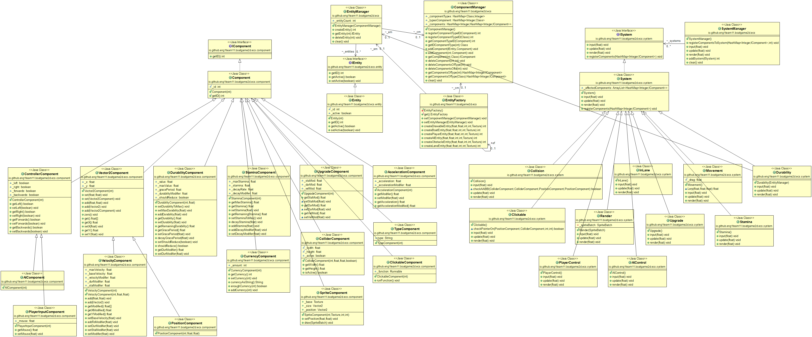

York Dragon Boat Race
ENG1 Team 11 project

|

|

|
ENG1 Team 11 project
|
|
|
|
We used UML (Unified Modeling Language), which a standardized and most-used modeling language developed to help system and software developers for specifying, visualizing, constructing, and documenting the artifacts of software systems. UML uses mostly graphical notations to express the design of software projects, which, we decided, is the most straightforward way to communicate detailed information about the architecture of our game.
We created a set of diagrams – an Entity-Component-System model, Sequence diagram and a State diagram - in order to represent the abstract architecture of the game. For the Entity-Component-Systems model and Sequence diagram we used PlantUML tool - an open-source tool that allows users to create UML diagrams from a plain text language. As for the State diagram, we chose to use Lucidchart. It is a web-based platform allowing users to collaborate on drawing, revising and sharing charts and diagrams.
We decided to use Entity-Component-System design pattern and build a UML class diagram. ECS is often used in game development as it allows a greater flexibility in defining entities where every object in the game's scene is an entity (e.g. boat, obstacles, lane). Every entity consists of one or more components which contain data or state. The behavior of an entity can be changed at runtime by systems that add, remove or mutate components.

Sequence diagram describes how different objects interact with each other in particular scenarios. In our case, diagram shows different challenges, e.g. obstacles in the lane, that the player must overcome to win the game as well as the consequences of failing or succeeding, e.g. reduced durability.

State diagram depicts different states of the game, such as the tutorial mode, pause, main menu screen etc.

We used ObjectAid UML Explorer, a code visualization tool for Eclipse IDE, in order to extract the concrete architecture.
We elected to implement an Entity-Component-System model over an inheritance model as it is more suited to both Java and the design of our game. The ECS model allows for quick and simple creation of entities which will be fully managed by the systems, as well as separation of data and code to keep the codebase maintainable and clean. The nature of an ECS model means that it is very easy to add new behaviours by creating a new system and registering components to it once the initial work implementing an ECS is finished.
Concretely, our implementation of an ECS model is based on three interfaces - ISystem, IEntity, and IComponent - which are made non-abstract by three classes - System, Entity, and Component. By extending the three classes, an ECS object can be created that is fully compliant with the rest of the objects and ready to be added to an entity. The Component and Entity classes both contain an ID which a system can use to find it or other component with, along with accessor methods. The System class provides a number of functions for a system to override to implement its own behaviours using. These are executed in a specific order so it can be guaranteed that certain code will run before other code if necessary.
For example, the Collision system extends the System class, ISystem, and is given the ColliderComponent, PositionComponent, and VelocityComponent components. From these it can check for collisions between entities and adjust their velocities accordingly, as well as apply damage if given a durability component. If implemented between two entities rather than on a system handling components, this would require the entities being given knowledge of each other which would only stand to convolute each entity.
Furthermore, as Java does have certain basic language features such as multiple inheritance or operator overloading, it is harder to implement an inheritance-based model as it must be done through pure abstract interfaces. This means that each entity class would have to store all its own data and override all its own methods which would stand to make the codebase messy and harder to maintain. If implemented as a class inheriting multiple interfaces, a player entity would likely have tens of functions and variables in one class, as opposed to being composed of 10 self-maintaining data components using the ECS system.
Additionally, the ECS system means that we can easily tune parameters of the game to change its overall balance whilst the game is running. This allows us to fulfill requirements UR_1, UR_4, UR_6, and UR_11. These requirements regard changing the stats of boats, spawning obstacles at a dynamic rate, scaling the difficulty, and upgrading the boat stats. Using the systems implemented, the parameters of these can easily be tweaked and modified to fulfill whatever requirement the client details.
View as a pdf file >>